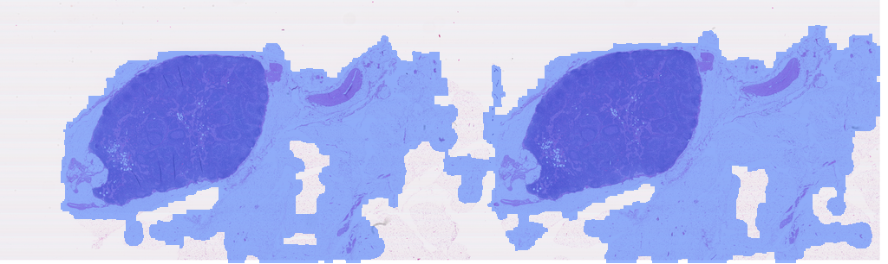

This slide was held out from the tumor_084 fit, but its expert annotation was publicly visible before this rerun. This is retrospective and reference-visible. The source is from the public CAMELYON16 training release, not the hidden challenge test.
Binary agreement on official known pixels
The official reference has no metastatic tissue. Metastasis IoU, Dice, recall and balanced accuracy are therefore undefined. False-positive area and false-positive rate describe the benign-slide error on the same 10,121,322 known-pixel denominator. Native prediction is primary; shared-support prediction is secondary.
| Measure | Native | Shared support |
|---|---|---|
| False-positive tissue area | 0.001024 mm² | 0.000000 mm² |
| False-positive known-pixel rate | 0.0006% | 0.0000% |
| False-positive pixels | 64 | 0 |
| Metastasis IoU / balanced accuracy | Undefined · no reference metastasis | Undefined · no reference metastasis |
Slide-level presence rule: Bora calls this slide negative because no positive component reaches 0.01 mm². The official reference is benign; the slide-level decision is correct, while the small false-positive tissue areas above remain.
Tissue and annotation views


Inspect the saved result
Download exact Bora GeoJSON · Download audited score receipt · Official source TIFF. The full source image is hosted by CAMELYON16 and is not redistributed here.
The saved vector is registered to calibrated source pixel edges. The overview is compact; close inspection should use the exact vector and official source image. The scored TIFF/BW masks, tissue support and GeoJSON round-trip were independently audited.
Other methods
Class-aware U-Net, DeepLabV3+, U-Net-box-guided MedSAM and fixed-prompt VISTA-PATH remain pending in this tumor_084-only rerun. Earlier tumor_093-fit results are preserved separately.